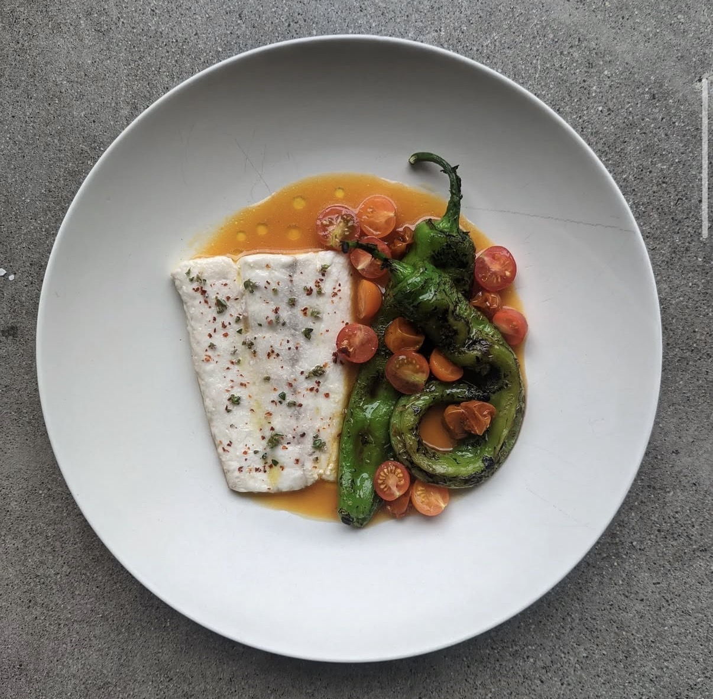
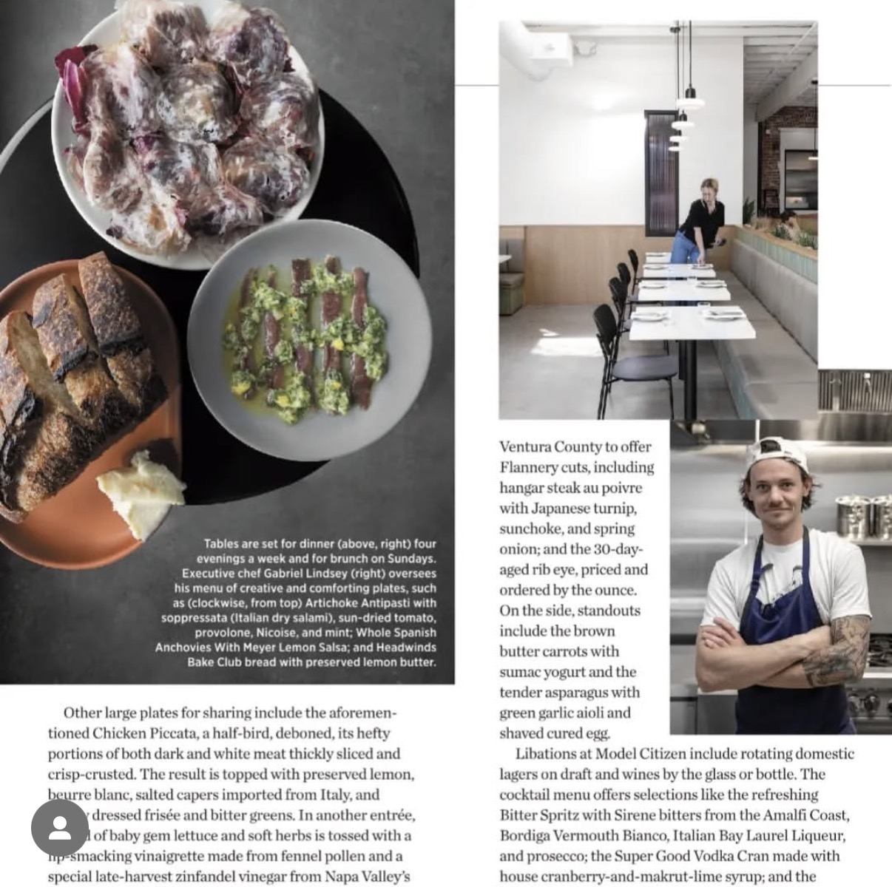
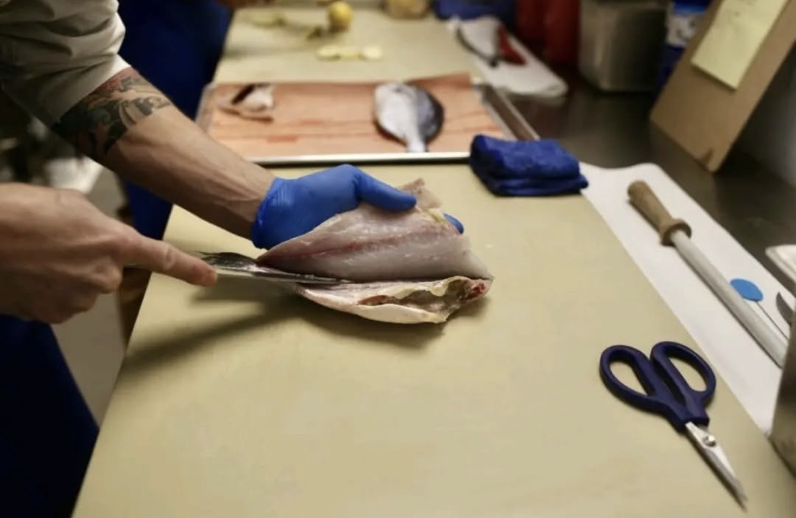

Popular
Popular
Perfect Cast Iron Ribeye Steak
The steakhouse secret: a searing-hot cast iron pan, butter basting with garlic and herbs, and a proper rest.
Professional chef techniques for home cooks. Every recipe tested, detailed, and designed to make you a better cook.
Popular
The steakhouse secret: a searing-hot cast iron pan, butter basting with garlic and herbs, and a proper rest.

Sun-dried tomatoes, spinach, and a velvety parmesan cream sauce. A 30-minute meal that tastes like all day.
Crispy golden skin, silky flesh, and a two-minute lemon caper butter pan sauce.

Deeply caramelized onions, rich beef broth, and a golden blanket of bubbling Gruyère cheese.

The same high-hydration dough method used in Naples — thin, blistered, and perfectly chewy.
 Featured
Featured
Fall-off-the-bone short ribs slow-braised in an entire bottle of Burgundy. The ultimate dinner party dish.

One extra step — browning the butter — adds a nutty toffee depth that makes these the best cookies ever.

Herb butter under the skin, high heat, and a simple pan sauce. Crackling skin and impossibly juicy meat.
Four-cheese béchamel, toasted panko crust, and black truffle oil. Comfort food elevated to fine dining.

Perfectly rendered crispy skin and rich duck flesh with a bright cherry and red wine pan sauce.

Julia Child's legendary French stew — beef, Burgundy wine, lardons, mushrooms, and pearl onions.

The definitive fresh pasta guide. Just eggs and flour — transformed by kneading and resting into silky perfection.